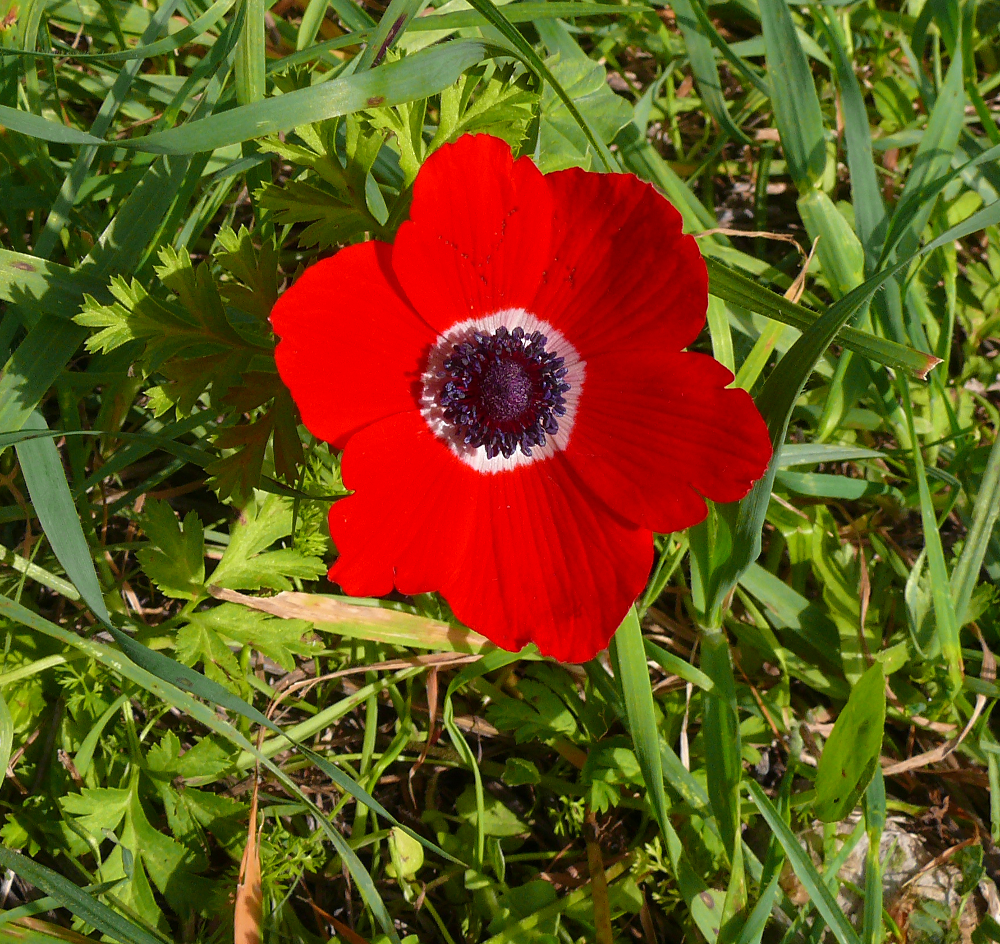
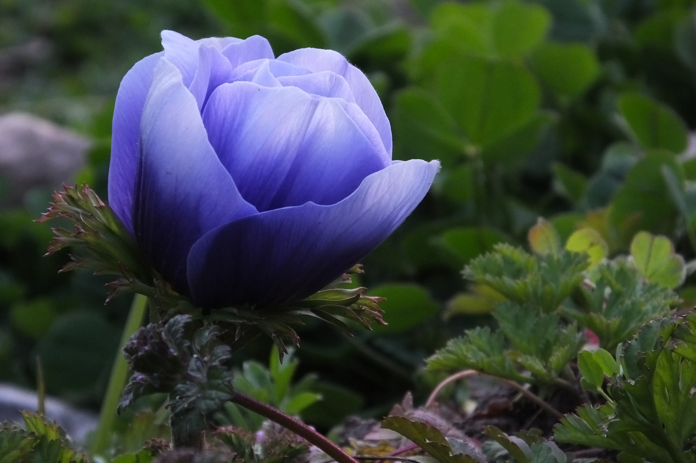
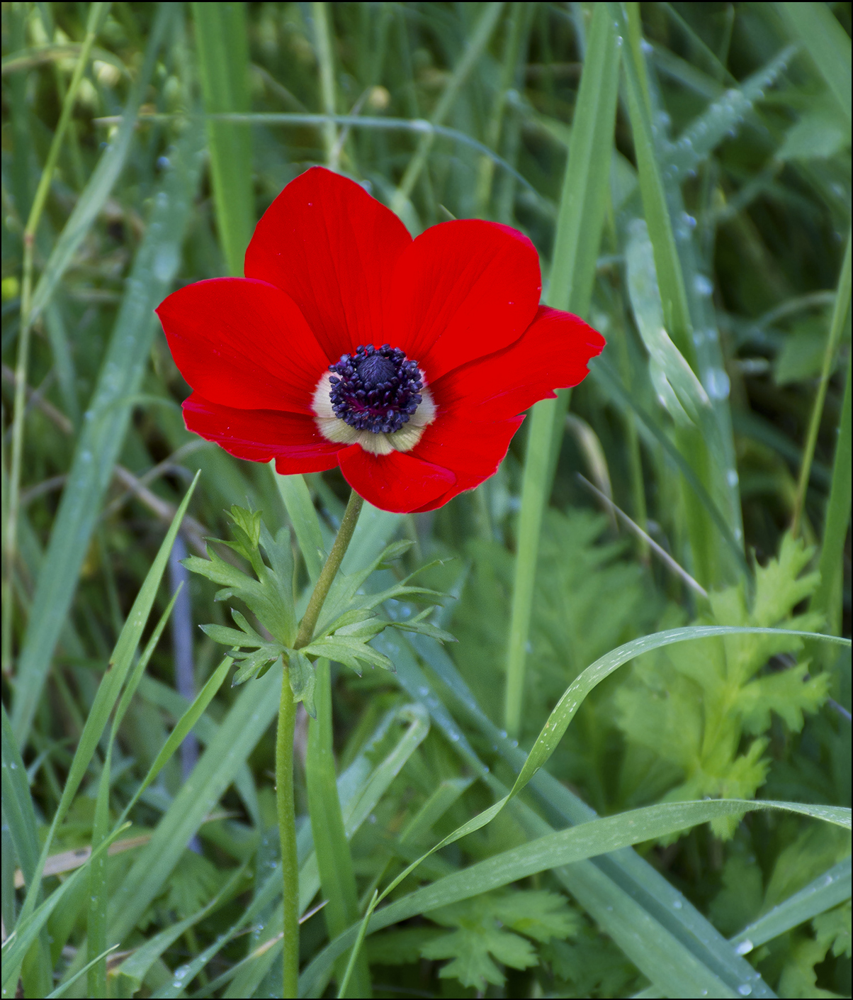
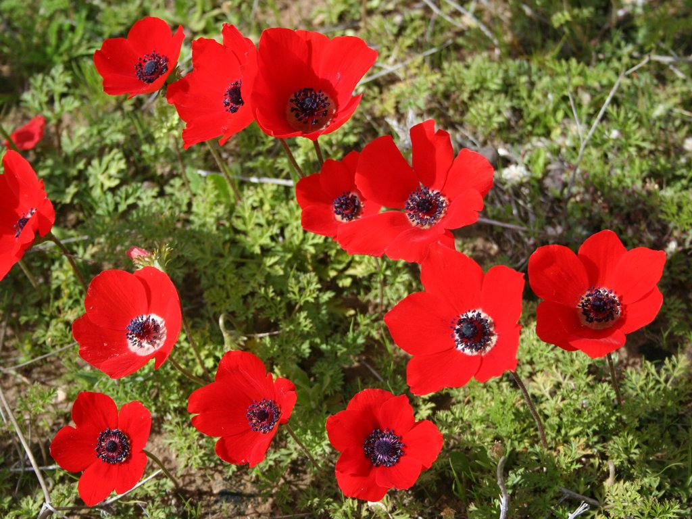

ВЕТРЕНИЦА КОРОНЧАТАЯ
Ботаническое описание
Ветреница корончатая (лат. Anemone coronaria) — многолетнее травянистое растение с клубневидным корневищем, достигающее 30 см в высоту. Прикорневые листья разделены на многочисленные узкие доли, на черешках. Листья на цветоносе сидячие, цельные.
Ареал
Ветреница корончатая происходит из Южной Европы и Центральной Азии.
Широко выращивается в качестве декоративного растения в Европе и Северной Америке.
Ветреница корончатая |
|  |
Научная классификация |
|
Галерея
  